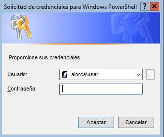

a.2) Administración de cuentas de usuarios y de equipos
Creación de usuario
Para la creación de usuarios en el dominio deberemos de crear un script con los siguientes comandos:
# En la primera línea se conecta al dominio. Esta línea requiere ser modificada.
$Path= "LDAP://CN=Users,DC=alorca,DC=1a"
$name = "Alejandro OC"
$NTname = "AlejandroOC"
$ou = New-Object Directoryservices.DirectoryEntry($Path)
$user = $ou.PSBase.Children.Add("CN=" + $name,'user')
$user.PSBase.CommitChanges()
$user.SAMAccountName = $NTname
$user.Description = "User_1"
$user.PSBase.CommitChanges()
$user.SetPassword("usuario_alorca1")
EXPLICACIÓN PASO A PASO
$Path= "LDAP://CN=Users,DC=alorca,DC=1a"
En esta línea me estoy conectando a mi dominio alorca.1a. Luego estoy entrando al contenedor users.
Para poder ver el nombre del dominio sólo basta con poner sconfig
$name = "Alejandro OC"
Estamos definiendo como se llamará el usuario.
$NTname = "AlejandroOC"
$ou = New-Object Directoryservices.DirectoryEntry($Path)
En esta línea creamos un nuevo objeto (en este caso un usuario con el path establecido en la primera línea.
$user = $ou.PSBase.Children.Add("CN=" + $name,'user')
Estamos definiendo el nombre del usuario.
$user.PSBase.CommitChanges()
Guarda los cambios
$user.SAMAccountName = $NTname
Establece el tipo de cuenta.
$user.Description = "User_1"
Establece una descripción del usuario.
$user.SetPassword("usuario_alorca1")
Establece una contraseña 'usuario_alorca1'
Para obtener el script dentro del servidor, deberemos de usar el comando wget, para obtener el de esta web debes de poner el siguiente enlace.
Para visualizar las propiedades del usuario usamos el comando Get-AdUser AlejandroOC -Properties *|more
Añadir equipos al dominio
$Domain = 'alorca.1a'
$hostname = Read-Host -Prompt 'Nombre del equipo'
Rename-Computer $hostname
Add-computer -domainname $Domain -Credential alorca\user -newname $hostname -Restart
EXPLICACIÓN PASO A PASO
En una variable a la que hemos llamado "Domain" introducimos el nombre de nuestro dominio:
$Domain = 'alorca.1a'
En una variable a la que hemos llamado "hostname" introducimos el nombre del host, pero en lugar de especificar su valor, solicitamos al usuario que lo introduzca mediante teclado:
$hostname = Read-Host -Prompt 'Nombre del equipo'
A continuación ejecutamos un cmdlet que nos permite renombar el equipo con el nombre almacenado en la variable $hostname:
Rename-Computer $hostname
Y, por último, ejecutamos el cmdlet que permite añadir el equipo al dominio:
Add-computer -domainname $Domain -Credential alorca\user -newname $hostname -Restart
En este último paso comentar dos cosas:
Una es que estamos especificando la credencial de un administrador cuyo nombre es "user" y pertenece al dominio "alorca" directamente en el comando (-Credential instituto\gestor). Si nos interesa más, podríamos solicitar al usuario que la introdujera por pantalla y la almacenamos en una variable y, posteriormente, usar la variable en el cmdlet Add-computer . Por ejemplo:
$Credential = Get-Credential
Otra, que estamos utilizando el parámetro -Restart para reiniciar el equipo justo después de cambiar el nombre, puesto que Windows requiere reiniciar para aplicar los cambios.
Para obtener el script dentro del servidor, deberemos de usar el comando wget, para obtener el de esta web debes de poner el siguiente enlace.

Al introducir el script y de poner el nombre nos pedirá las credenciales.
Se introduce la contraseña del administrador y luego introducimos el comando restart-computer -confirm para reiniciar el equipo
Para comprobar los equipos añadidos Get-ADComputer -Filter *